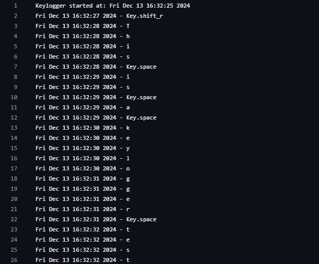
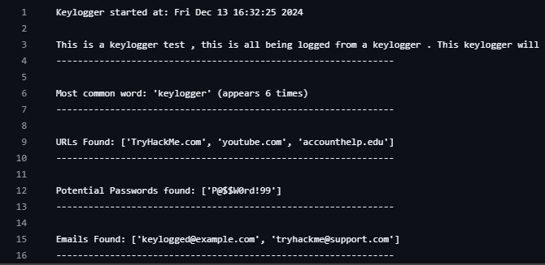

Keystroke Log Analyzer with Word Extraction and Pattern Detection
In this project, I created a keylogger to capture keystrokes and a script to analyze the logged data. The script reconstructs the keystrokes into readable text and identifies patterns like common words, URLs, emails, and passwords, making it easier to extract useful information.
What I Learned
Through this project, I gained several key insights that will benefit my future career as a cybersecurity analyst. One critical takeaway was understanding the security implications of how straightforward it is to create and implement a keylogger. Keyloggers are relatively easy to develop or acquire, and a threat actor merely needs to deploy a payload for the victim to execute the script, which can often evade detection.
Additionally, this project deepened my proficiency in Python, particularly through the use of libraries like pynput for capturing keystrokes and re for regex-based pattern matching. As I progressed, I found myself continuously expanding the functionality of the script. Initially focused on detecting common words and URLs, I later incorporated features to recognize emails and potential passwords.
Looking ahead, there are several enhancements I'm considering, such as encrypting output files, conducting more detailed analysis of typing patterns, and expanding pattern recognition capabilities. These additions could further improve the project's scope and relevance to real-world cybersecurity challenges.
Above is the input I typed during keylogger script active.
Above is the raw logs that was produced in real time(742 lines total)
Above is the the extracted logs with patterns found.
In-Depth Description
This project consists of two key components: a keylogger for capturing keyboard input and an analysis script for processing the captured data. The keylogger is designed to record all keyboard activity and log it to a file, raw_log.txt, along with timestamps. When activated, it initializes the log file by noting the start time and records each key pressed, including handling special keys like spaces, backspaces, and other non-character keys. The keylogger continues capturing input until the esc key is pressed, which serves as the stop mechanism.
Once the keylogging phase is complete, the log analysis script processes the data to extract meaningful insights. First, the script reads the raw log file and removes timestamps and unnecessary formatting, leaving only the recorded keystrokes. It then reconstructs the keystrokes into coherent text by handling spaces, backspaces, and other formatting nuances. From the reconstructed text, the script identifies patterns useful for analysis, such as the most common words, URLs, emails, and potential passwords, which are detected using regular expressions to match specific patterns. The results are then output to a new file, extracted_words.txt, which provides a detailed summary of the reconstructed text, the most frequently used word, any identified URLs, emails, and passwords. This project highlights how keyloggers can be used to gain intelligence and emphasizes the importance of understanding these tools from a cybersecurity perspective to recognize potential threats and defend against them.
View Code on GitHub